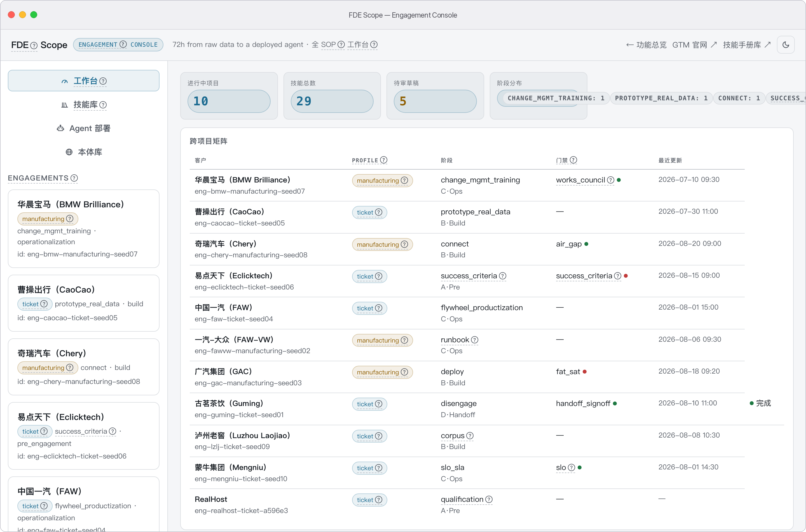
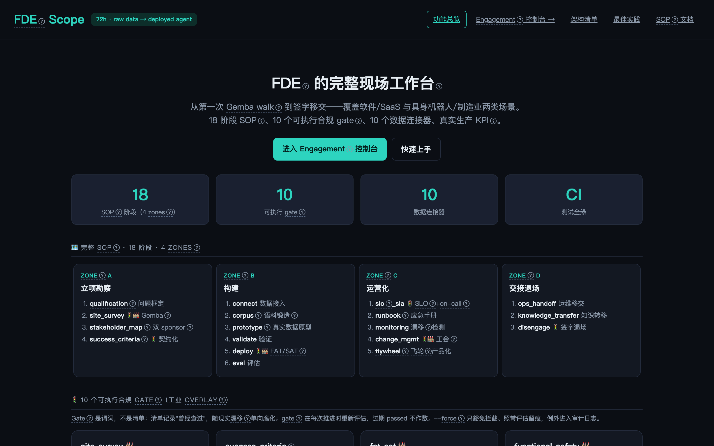

清单会遗漏，门禁不放行。
把完整 FDE 作业流程（4 区、18 阶段、10 个可执行门禁）固化为状态机：证据不齐，拒绝推进。软件与车间共用一台引擎。
场景配置
A进场前
B构建
hazard analysis missing
C运营化
D交接退场
门禁拦下的事故日志
真实事故，同步自公开复盘库 kuba-database。在清单上它们会溜过去；映射到看板上，每一条都是一道会拒绝放行的门禁。
2015·05·28FDEINC-20150528-CTRIP · SEV-1
携程 5·28 全站瘫痪（运维误删生产服务器执行代码，12 小时全业务中断）
FDE · PHASE 12 · RUNBOOK — 回滚路径与安全失败模式，先于上线存在。案例档案 · 携程
2022·12·18FDEINC-20221218-ALIYUN-HK · SEV-1
阿里云香港可用区 C 大规模服务中断（冷机水路气阻+群控死锁，运营十余年最长大故障）
FDE · GATE fat_sat — 冷却与群控联动必须通过现场验收，才能放行上线。案例档案 · 阿里云
2025·09·18FDEINC-20250918-CLERK-DATABASE · SEV-1
Clerk 数据库事件（供应商自动升级触发连接池同步回收，惊群效应致间歇性故障 4 天，诊断被监控采样率掩盖）
FDE · GATE slo — 错误预算 + 告警路由；采样不能掩盖证据。案例档案 · Clerk
2025·06·26SAINC-20250626-CLERK-CLOUDRUN · SEV-1
Clerk 全服务中断 45 分钟（单区域架构 + 过度信任 Cloud Run 冗余承诺，认证基础设施整体不可用）
SA · PHASE 07 · REAL DATA — 供应商承诺不等于已验证事实，用生产形态的真实环境验证。案例档案 · Clerk
2023·09·12SAINC-20230912-UNITY-RUNTIME · SEV-2
Unity Runtime Fee 收费政策引爆开发者生态危机（按安装收费决策 + 傲慢沟通，CEO 下台、政策最终取消）
SA · GATE success_criteria — 书面标准 + ≥2 发起人 + 干系人对齐的成功指标。案例档案 · Unity
2021·10·04SAINC-20211004-FACEBOOK · SEV-1
Facebook 全球中断（骨干网维护命令撤销全部 BGP 路由）
SA · PHASE 12 · RUNBOOK — 带外恢复路径要演练过，不能假设它在。案例档案 · Meta（Facebook）
十个门禁，全部是可执行代码
不是清单条目。Gate.check(ctx) 返回通过/阻断/警告，advance 不干净就拒绝。其中七个只存在于工厂场景。
互锁面板数字键 1–0 直达门禁
1site_survey现场位置必填；资产为空或多班次无网络 → 警告。
2success_criteria书面标准 + ≥2 发起人；发起人无指标 → 警告。
3functional_safetyPL/SIL 达标；ISO 10218 评估；危害分析强制（阻断项）。
4fat_satFAT 与 SAT 均通过且分别签核。
5conformity高风险 ⇒ CE 标志 + 技术构造文件 + 危害分析。
6works_council有员工代表时须劳资共决签核。
7air_gap离线部署形态在接入时定论，杜绝事后外联。
8shift_handover多班次现场须有数字交接日志 + 分班次 runbook。
9sloSLO/SLA + 错误预算 + 告警路由；缺路由 → 警告。
0handoff_signoff交接包齐备（runbook/评估/SLO/培训）且客户签收；缺适用边界（G7③）/ 终止条件（G7④）→ 警告，不阻断。
清单
一份记录。填完那天最准，此后随现实漂移单向腐化，勾选框不会知道世界变了。
门禁
一个谓词。每次推进重新执行，过期通过一律不作数；强推也照常评估留痕，例外本身进审计。
一台引擎，两张工单
同一台状态机既跑客服台也跑机器人产线；场景配置切换连接器、KPI 与适用门禁。
Ticket
客服场景- Phases
- 18 阶段中的 15 个；3 个工业专属阶段自动不适用。
- Connectors
- CSV · Zammad · Salesforce · MySQL
- Gates
- success_criteria · slo · handoff_signoff
- Proof
- 解决率 / 满意度 / 分流率 / 坏例挖掘
Manufacturing
工厂场景- Phases
- 全 18 阶段，含现场勘察、FAT/SAT 部署与共决变更。
- Connectors
- OPC UA · MQTT-Sparkplug · ROS2 · MES · Historian
- Gates
- 全部十个门禁
- Proof
- OEE / 平均故障间隔 / 良率 / 抓取成功率 / 碰撞率
一次部署，拉起一支 Agent 班组
点到的每个名字都是真实的 AgentScope 2.0 Agent——接线模型、角色工具包、经 AgentState 注入的权限规则。FDE 自己点名开 Agent；未知角色退化为语料工具，缺数据源的工具在清单里如实标注 unbound，绝不假装可用。
点名名字:角色[:模型]，可重复
fde-scope deploy --tenant acme --agent 数据员:数据分析 --agent 日志员:日志分析:qwen3-14b --connector-source csv=sample.csv预检发车前先看 plan：Web 控制台 /console#deploy「🤖 Agent 部署」（macOS App 同款标签页），同走 build_deploy_plan
fde-scope web
ROSTER每个名字一个真实 Agent
SUBAGENT TEMPLATE蓝图注册进真实 app
AGENTCREATE · TEAM SAYleader 派活，成员回报
SERVE--serve 起真服务（Redis + 模型）
一块已经跑起来的看板
一条命令种入六个真实感项目；以下每条门禁记录都由引擎自身生成，面板不会说谎。
客户场景阶段状态故事状态
茶语万象 · 茶饮连锁ticket15/15完整交接包，客户签收。已签收
亚特联汽车 · 整车制造mfg11/189/9 工业门禁通过：三班制、共决、PL d/SIL 2、HAZOP。运行中
南湾汽车 · 整车制造mfg9/18FAT/SAT、功能安全与合规真实阻断 → 拒绝推进。阻断
北疆汽车 · 整车制造ticket13/15产品化飞轮运转中。飞轮
迅捷出行 · 网约出行ticket8/15真实数据原型，SLO 已定义。原型
星澜科技 · 外呼 SaaSticket3/15单一发起人阻断，即 Sponsor Collapse 反模式，被门禁拦下。阻断
演示数据 · 由 examples/seed_mock_engagements.py 种入；每条门禁记录均由引擎生成。
真机界面 · macOS App 实拍
双击即用的 macOS App 实机截图：universal2 双架构、codesign 签名 DMG、单实例守护、优雅退出。CLI 背后那台引擎，装进了一个免 Python 的桌面图标。


实机截图 · FDE-Scope-0.1.0-universal2.app · 1440×952 @2x · macOS 窗口 · $ ./appbuild/build_release.sh
零配置工具架
核心与 engagement 层零 AgentScope 依赖：无 LLM key、无 Docker，五分钟全绿。
安装核心 + 开发 + Web
pip install -e ".[dev]"种入演示六个真实感 engagement
python examples/seed_mock_engagements.py控制台http://127.0.0.1:8080
fde-scope web本体库TBox/ABox/SKOS 浏览与校验（list/validate/check）；导出 JSON-LD 1.1；Web 控制台 /console#ontology 同款
fde-scope ontology export fde-core
SKILL CAPTURE现场沉淀草稿
REVIEW审阅队列
PUBLISH可检索复用
EXPORT双格式导出
交付清单 · 功能 / 架构 / 最佳实践
三本台账，今天即可验证——不是路线图：功能做什么、架构怎么分层、六条被契约测试钉住的工程不变式。
产品
功能清单
- 18 阶段 SOP — 门禁是代码 Gate.check()，不是检查清单
- 2 套场景 — 工业门禁：FAT/SAT · ISO 13849 · CE/EU-AI-Act · BetrVG §87 · 气隙 · 换班
- 10 个数据连接器 — CSV/MySQL/OPC UA 真实 · MQTT-Sparkplug/MES JSONL · Documents 解析延迟导入
- 语料锻造 — 脱敏→质量门→覆盖度→缺口检测→补盲区合成
- 评估 + 工业 KPI — OEE / MTBF / 抓取成功率 / 碰撞率
- 技能库 — AgentScope 与 QwenPaw 双格式导出
- 本体语义层 — fde-core + ISA-95 overlay · SKOS 概念体系驱动语料覆盖与技能检索 · ONTO-* 错误码校验
- 部署三支柱 — Agent 装配 · 权限上下文 · 沙箱 workspace
- 交接 + 飞轮 — 无 key 全走规则路径，失败自动回退
架构
架构清单
- 核心层 — 零顶层 agentscope 依赖：无 key、无 Docker 五分钟全绿
- deploy/ — 三支柱运行时组装，optional extra
- connectors/documents.py — PDF/Word/Excel/PPT 解析延迟用 agentscope.rag
- 横切层 — 唯一 LLM 出口 llm.py；本体 TBox/ABox/SKOS 原子落盘；data_root() 四级解析
- 4 个界面 — CLI · Web 控制台 32 路由 · PawApp 18 路由 · macOS DMG 双击即用
- 证据模型 — Structurizr DSL + DOT 为事实源，Mermaid 沉淀可读图
最佳实践
六条不变式
- 门禁实时重评 — 每次 advance 重评门禁，过期 passed 不放行
- 服务端生成 ID — 外部输入永远不能指定记录 ID
- 密钥仅存环境变量 — 密钥只走环境变量，绝不落 manifest/报告/日志
- 原子写入 — 所有落盘记录经 fsutil.atomic_write_text
- 仅规则授权 — 唯一权限通道；未匹配工具 DEFAULT→ASK · DONT_ASK→DENY
- 实测 AgentScope 窗口 — >=2.0.4.post1,<3 逐版本实测，契约测试钉住引用
验证来源：CI 全绿套件 · 契约测试 tests/test_architecture_guard.py · 证据模型 docs/architecture-model/architecture-map.md
定价 · 三档
引擎开源，席位商用：Community 免费起步，Pro 按 FDE 席位订阅，Enterprise 由我们陪跑进现场。
CECommunity
开源 · MIT
¥0 / 永久免费
- 18 阶段 SOP — 完整状态机引擎，与商业版同一台
- 10 个数据连接器 — 全部连接器与两种场景配置
- MIT 开源协议 — 可自由商用、修改与再分发
- 社区支持 — 经 GitHub Issues 响应
PROPro
按席位订阅
¥4,800 / 席位 / 月
占位价格 · 价格以商务洽谈为准
- 社区版全量 — 包含社区版全部功能
- 按席位订阅 — 按 FDE 席位计费，随团队规模伸缩
- 优先支持 — 工单优先响应，远程排障
- 团队导入 — 培训与 SOP 配置辅导
ENTEnterprise
面议
按规模 · 洽谈定价
- Pro 全量 — 包含 Pro 全部功能
- 审计 + 证据链 — 审计日志与证据链留存，面向合规检查
- 专属连接器 — 适配你的现场系统
- SLA 保障 — SLA 服务保障与专属响应通道
联系我们
本页无表单、无追踪、无后端。直接发邮件，由工程师回复；或开公开 Issue，让社区一起看到答案。
邮件销售 / 试用 / 企业部署
contact@fde-scope.dev